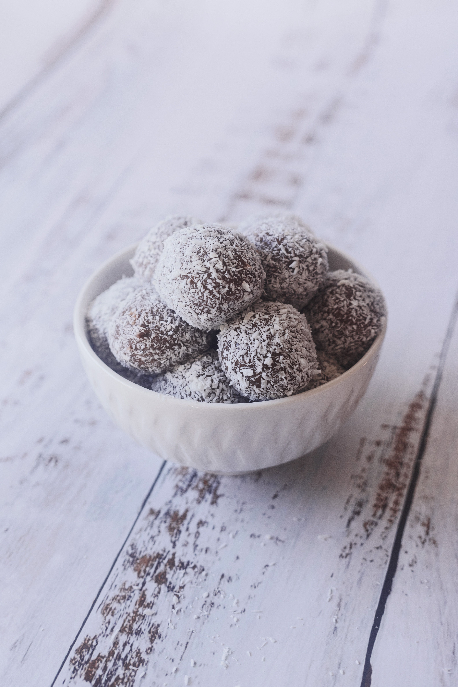
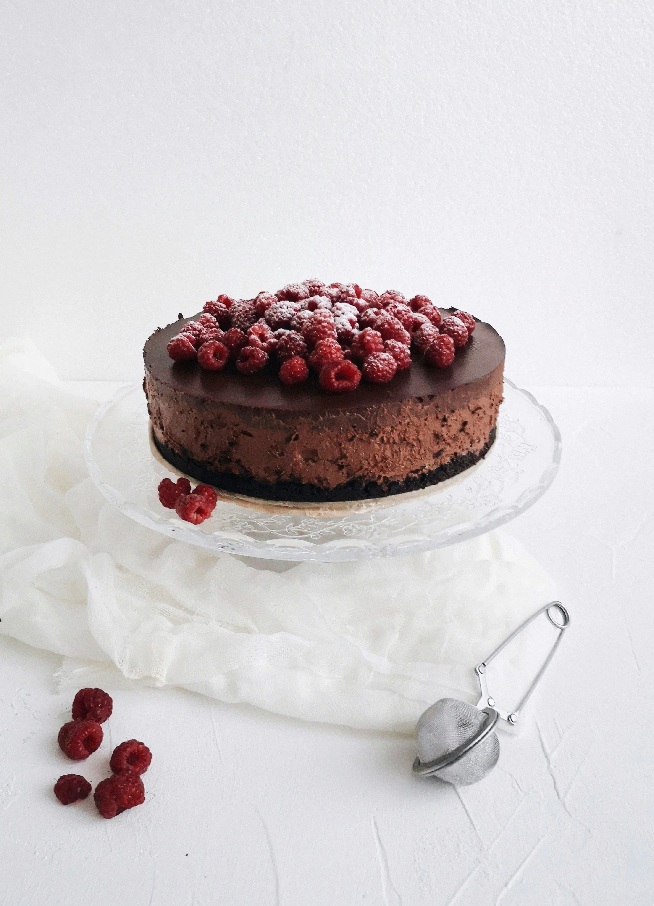
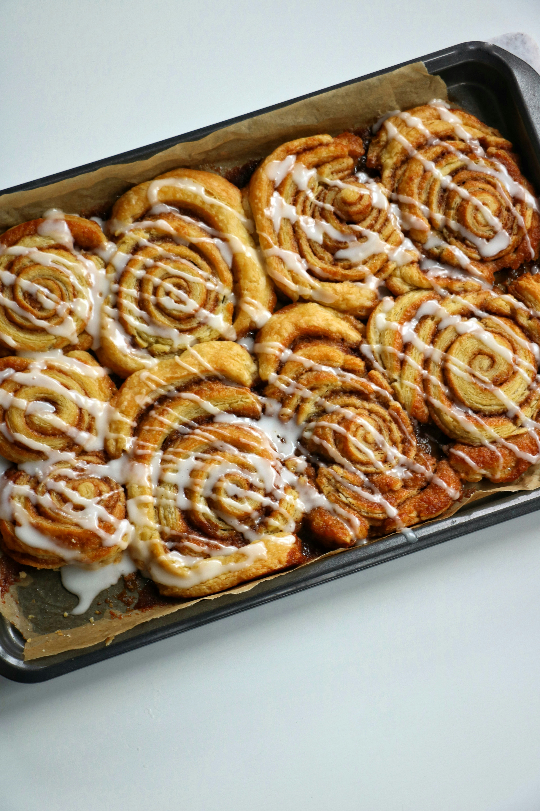

Chokladbollar
Kakor · 20 min
Enkla och klassiska chokladbollar som passar perfekt till fikat.
FIKA · RECEPT · INSPIRATION
Hitta enkla och goda recept för dagens fikastund.
Se recept

Kakor · 20 min
Enkla och klassiska chokladbollar som passar perfekt till fikat.
Kakor · 40 min
En kladdig chokladkaka med syrliga hallon.

Bullar · 90 min
Mjuka kanelbullar med smör, kanel och socker.

Kakor · 45 min
Frisk och saftig kaka med smak av citron.

Snabbt · 30 min
Saftiga muffins fyllda med blåbär.

Pajer · 50 min
En enkel äppelpaj med kanel och krispigt täcke.
OM FIKAGUIDEN
Fikaguiden samlar enkla och goda recept för fika med familj och vänner.